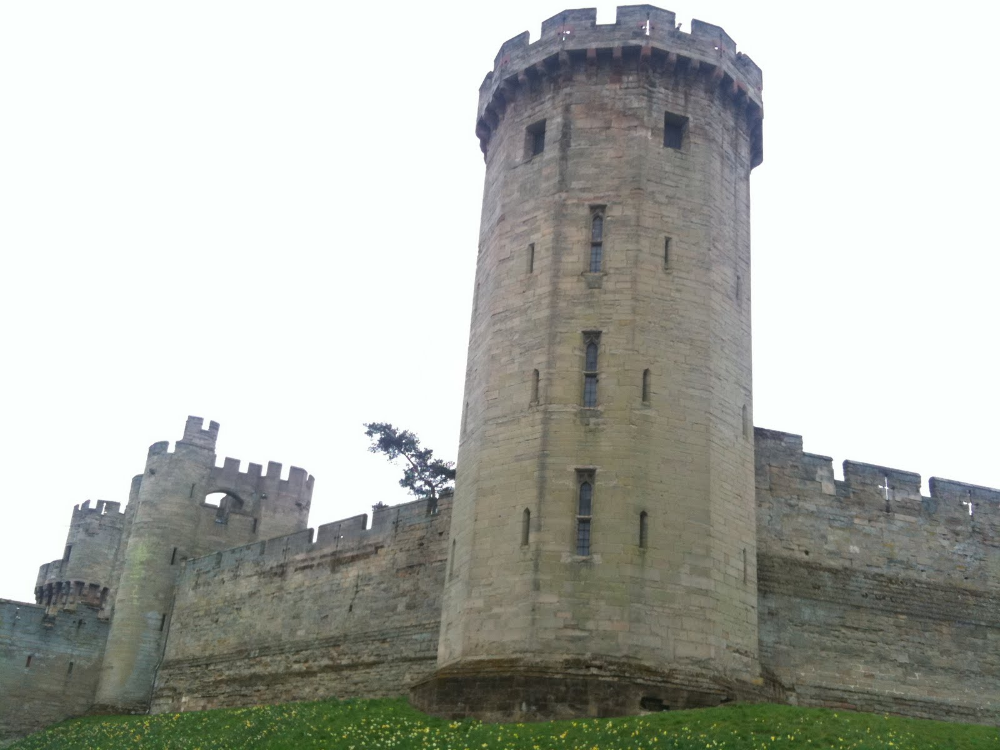
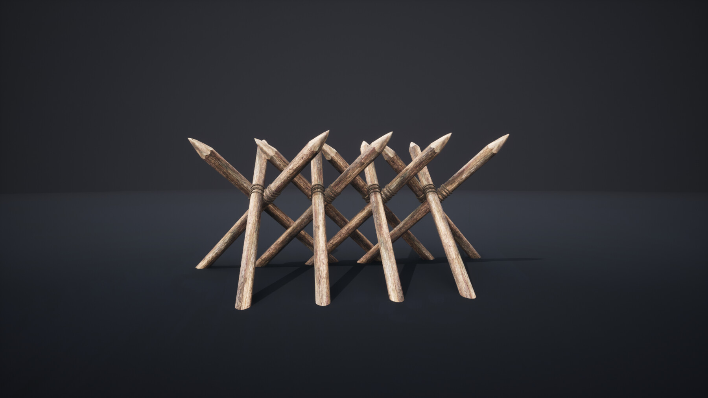

Castelele feudale reprezintă una dintre cele mai impresionante realizări ale arhitecturii medievale, reflectând atât evoluția tehnologică, cât și nevoile strategice ale vremii. Aceste structuri masive și complexe au fost construite de-a lungul secolelor IX-XV, într-o perioadă caracterizată de conflicte frecvente și instabilitate politică.
În cadrul feudalismului, un sistem social dominat de relații de supunere și protecție, castelul juca rolul unei reședințe fortificate pentru nobili, dar și al unui centru de comandă pentru administrarea teritoriilor și protecția acestora împotriva invaziilor sau răscoalei.
În esență, un castel feudal era mult mai mult decât o simplă locuință. Acesta era un simbol al puterii și autorității unui nobil, un punct de control asupra regiunii înconjurătoare și un refugiu în fața pericolelor externe. Arhitectura sa a evoluat continuu pentru a răspunde provocărilor militare și sociale ale epocii, având la bază o combinație de tehnici de construcție inovative și soluții defensive avansate.
Elementele cheie ale unui castel feudal reflectă atât dorința de protecție, cât și preocupările legate de confortul și statutul nobililor care locuiau în aceste fortărețe. În acest context, fiecare componentă – de la zidurile exterioare, la turnurile de apărare și curțile interioare – era gândită pentru a asigura atât siguranța, cât și eficiența administrativă. De-a lungul vremii, arhitectura castelului a evoluat de la construcții din lemn, vulnerabile la atacuri, la impozante structuri de piatră, capabile să reziste celor mai avansate tehnici de asediu ale vremii.
Castelele feudale au avut, de asemenea, un rol important în dezvoltarea urbanistică și socială a regiunilor în care se aflau, fiind centre de putere și influență, unde se desfășurau activități economice, culturale și politice. În ciuda destrămării multora dintre aceste fortificații în urma dezvoltării armamentului de foc și a schimbărilor sociale, multe castele medievale au rămas în picioare până în zilele noastre, oferind o fereastră fascinantă către trecutul unei Europe medievale marcată de conflicte, dar și de mari realizări arhitecturale.
1. Elemente principale ale unui castel feudal
a) Zidurile exterioare și fortificațiile
-
Curtina
 – zidul exterior masiv al castelului, construit din piatră, având rol defensiv.
– zidul exterior masiv al castelului, construit din piatră, având rol defensiv.
- Turnurile de apărare – plasate strategic de-a lungul zidurilor, acestea permiteau arcașilor să apere castelul.
- Creneluri – deschideri alternante în partea superioară a zidurilor, utilizate de apărători pentru a trage asupra inamicilor.
- Drumul de strajă – o platformă situată de-a lungul zidurilor castelului, pe care soldații patrulau pentru a supraveghea împrejurimile.
- Poarta fortificată (barbacana) – intrarea principală era extrem de bine apărată.
-
Hersa
 – o poartă masivă din lemn sau metal, întărită cu țepi, care putea fi coborâtă rapid pentru a bloca accesul inamicilor. Era amplasată de obicei la intrarea principală a castelului, în spatele porții fortificate.
– o poartă masivă din lemn sau metal, întărită cu țepi, care putea fi coborâtă rapid pentru a bloca accesul inamicilor. Era amplasată de obicei la intrarea principală a castelului, în spatele porții fortificate.
-
Podul mobil
 – un pod rabatabil care permitea accesul peste șanțul castelului. În poziția ridicată, podul mobil bloca intrarea și servea drept ușă suplimentară pentru protecție.
– un pod rabatabil care permitea accesul peste șanțul castelului. În poziția ridicată, podul mobil bloca intrarea și servea drept ușă suplimentară pentru protecție.
b) Curtea interioară și clădirile esențiale
- Donjonul (turnul de locuință sau keep-ul) – cea mai fortificată parte a castelului, unde se adăposteau nobilii în caz de asediu. Avea pereți groși și era prevăzut cu încăperi pentru locuit, depozite de provizii și uneori chiar o fântână.
- Sala mare – un spațiu central unde aveau loc banchetele, adunările și administrarea domeniului.
- Capela – castelul avea adesea o capelă pentru slujbe religioase, de obicei construită lângă donjon.
- Grajduri și hambare – destinate animalelor și proviziilor, amplasate în curtea interioară.
- Cazarma – adăpostea soldații și servitorii castelului.
c) Apărarea castelului
- Metereze – deschideri înguste în ziduri prin care soldații puteau trage cu arcuri sau arbalete.
- Mașiculi – balcoane de piatră ieșite în afara zidului, prin care se puteau arunca pietre sau ulei încins asupra atacatorilor. Tot odata toaletele aratau ca niste masiculi, ceea ce rezulta in confuzia atacatorilor acestia fiind loviti cu materii fecale, iar acestea erau si un punct slab al defensivei fiind un loc prin care inamicii se puteau infiltra.
- Turnuri de veghe  – permiteau supravegherea împrejurimilor pentru a detecta atacuri iminente.
2. Evoluția arhitecturii castelului feudal
Perioada timpurie (secolele IX-XI) – castele din lemn construite pe movile de pământ (motte-and-bailey).
Perioada clasică (secolele XII-XIV) – apar castele de piatră cu ziduri groase, turnuri rotunde și donjon masiv.
Perioada târzie (secolele XIV-XV) – castelele devin mai confortabile, dar se construiesc bastioane pentru a rezista tunurilor.
Aceste castele nu erau doar fortărețe, ci și centre administrative, economice și simboluri ale puterii nobiliare. Multe dintre ele au supraviețuit până astăzi și pot fi vizitate ca monumente istorice.
3. Evoluția castelului după răspândirea armelor de foc
Odată cu răspândirea armelor de foc în secolele XV-XVI, arhitectura castelului feudal a suferit transformări semnificative. Zidurile înalte și subțiri ale castelelor medievale au devenit vulnerabile în fața tunurilor, ceea ce a dus la dezvoltarea unor noi tipuri de fortificații.
În această perioadă, arhitectura în stil Vauban, numită după inginerul militar francez Sébastien Le Prestre de Vauban, a devenit predominantă. Acest stil se caracteriza prin bastioane joase, ziduri groase și un sistem de apărare în formă de stea, care permitea o mai bună rezistență împotriva atacurilor cu tunuri.
- Bastioane – structuri triunghiulare amplasate la colțurile fortificației, care ofereau unghiuri largi pentru apărare și eliminau punctele moarte.
- Șanțuri uscate – șanțuri adânci fără apă, care îngreunau accesul inamicilor și protejau zidurile exterioare.
- Ravelin – o fortificație avansată, separată de zidurile principale, destinată să absoarbă atacurile inițiale ale inamicilor.
- Contragărzi  – structuri suplimentare care întăreau apărarea și permiteau o mai bună organizare a contraatacurilor.
Aceste inovații au transformat castelele medievale în cetăți moderne, adaptate noilor realități militare. Deși multe castele medievale au fost abandonate sau transformate în reședințe nobiliare, stilul Vauban a influențat profund arhitectura militară europeană până în secolul XVIII.